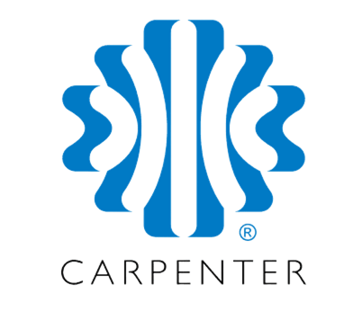
Ayudante de corte de espuma PU y Operario de control de calidad
06/2023 - Actualidad | Ciudad Rodrigo, España
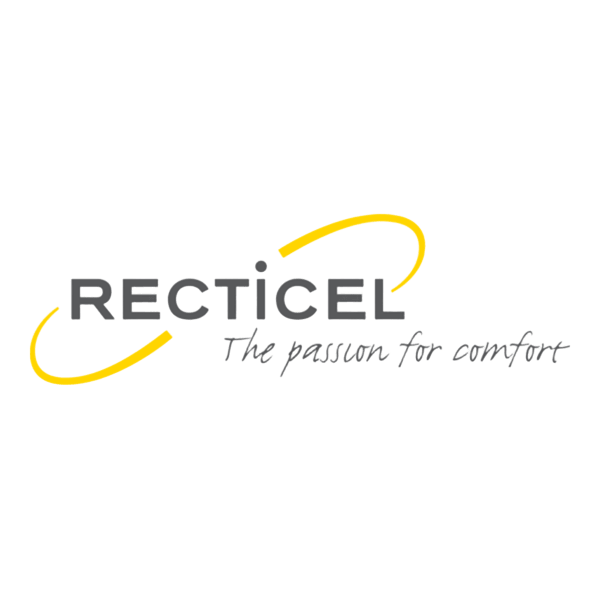
Ayudante de corte de espuma PU y Operario de control de calidad
08/2011 - 05/2023 | Ciudad Rodrigo, España
Operario de carga y organización logística
03/2011 - 07/2011 | Ciudad Rodrigo, España
Operario de recolección de residuos sólidos urbanos
08/2009 - 12/2010 | La Maya, España
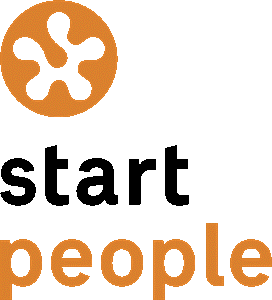
Operario de recolección de residuos sólidos urbanos
08/2007 - 12/2008 | La Maya, España
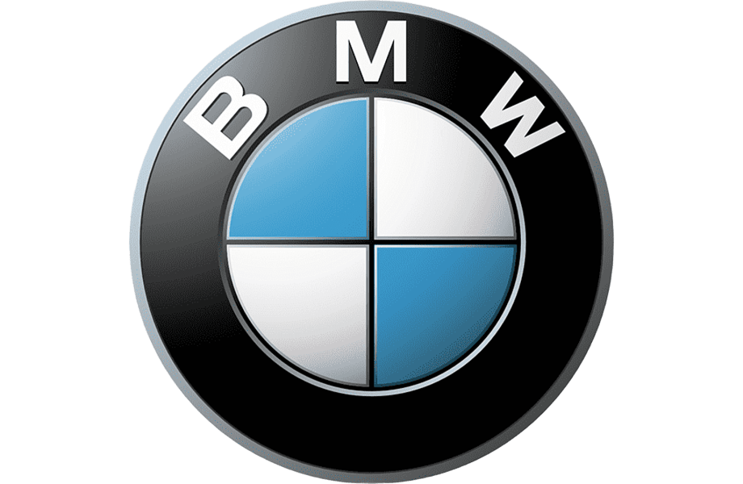
Mecánico y limpiador de automóviles
08/2006 - 12/2006 | Ávila, España
Vendimiador
09/2004 - 10/2004 | Burgos, España

Mecánico en prácticas
04/2004 - 07/2004 | Salamanca, España
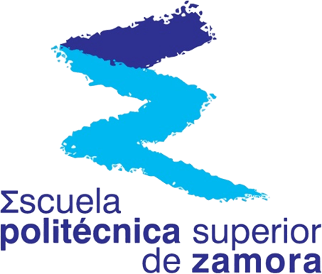
Experto en Energías Renovables y Eficiencia Energética
2010/2011
Ingeniería Técnica Agrícola Esp. Explotaciones Agropecuarias
2004/2009
Técnico Superior en Mantenimiento de Vehículos Autopropulsados
2002/2004
Licenciatura en Matemáticas
2000/2002
Bachillerato Ciencias de la Salud
1998/2000
Educación Secundaria Obligatoria
1996/1998
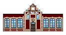
Educación Primaria
1988/1996
Programación
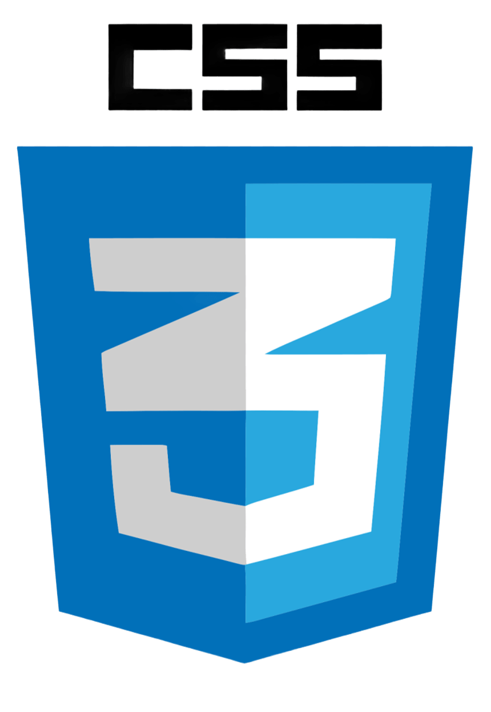

Sistemas Operativos
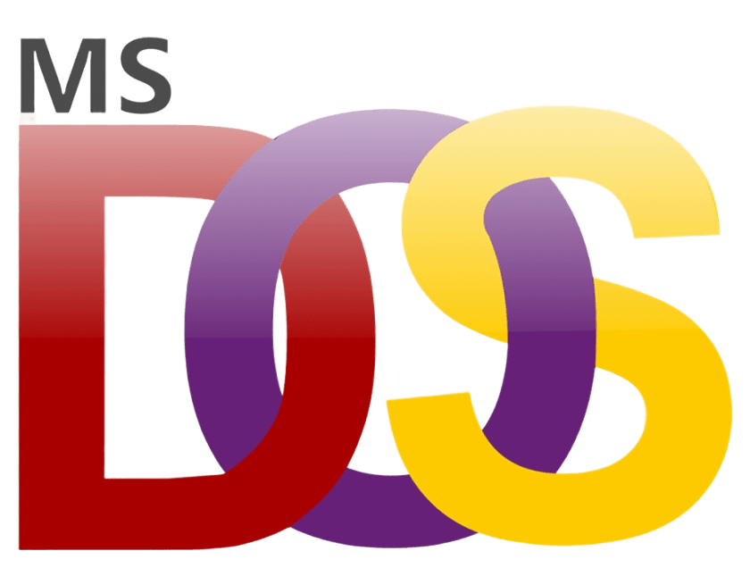
Máquinas Virtuales
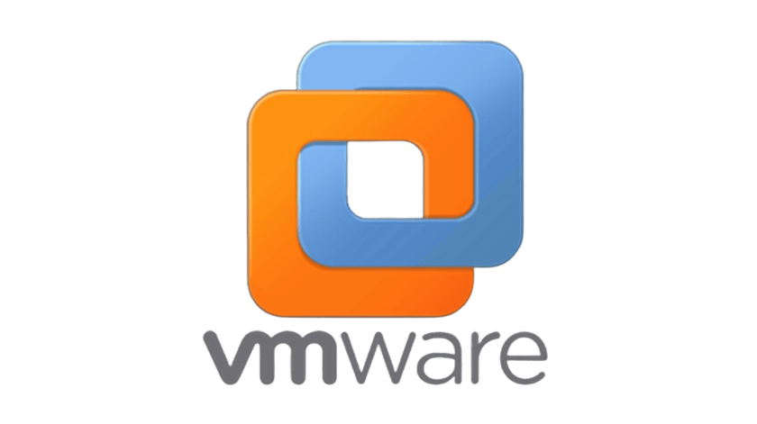
CAD
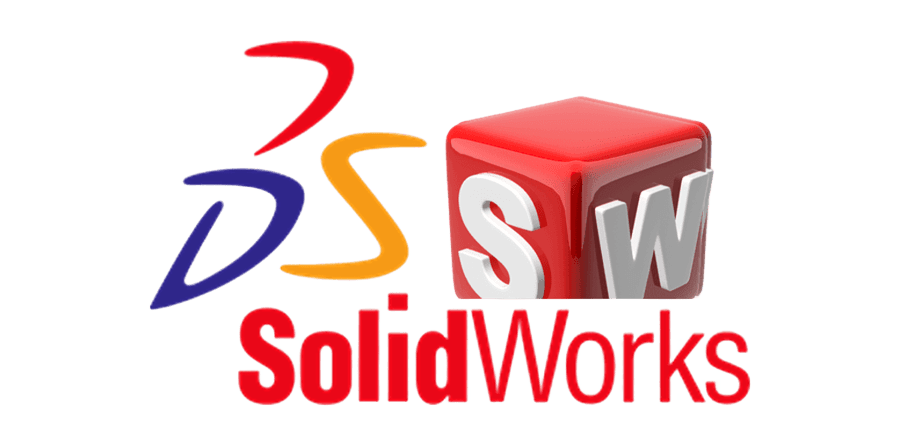
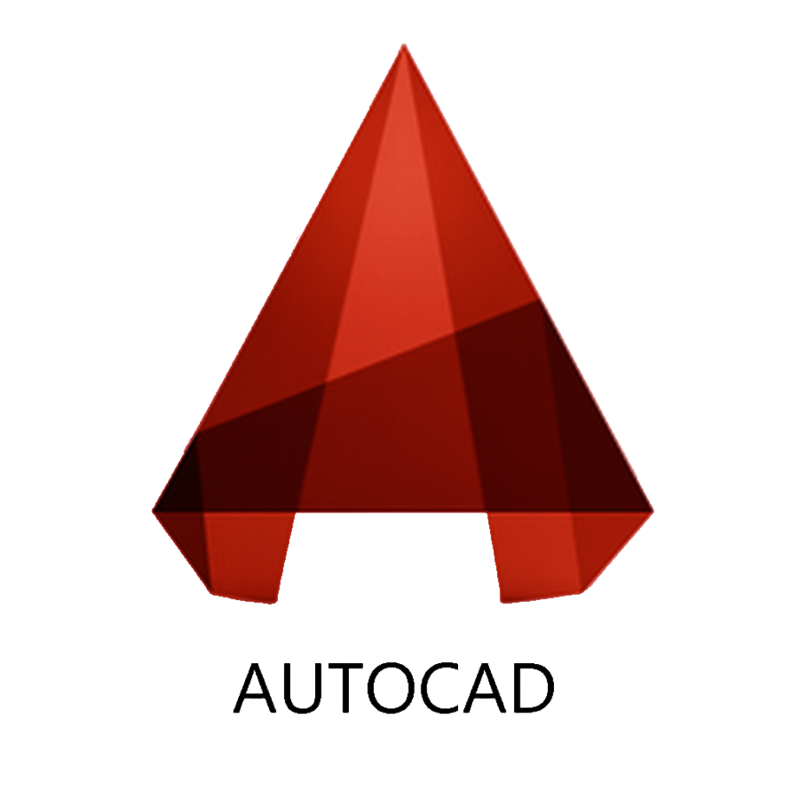
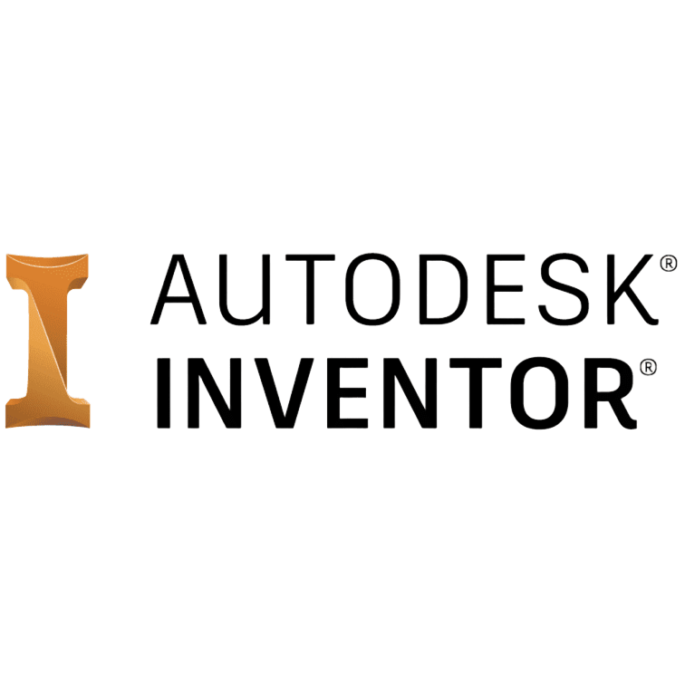
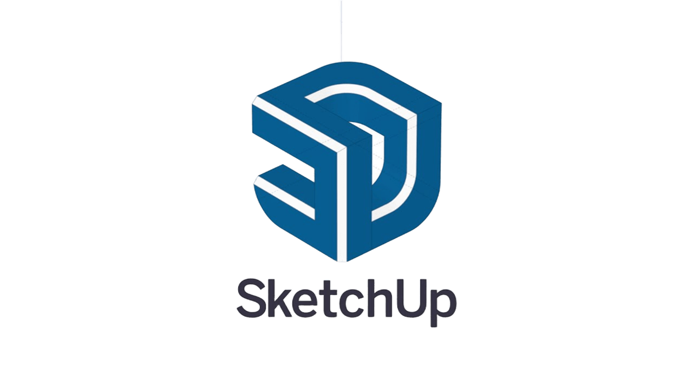
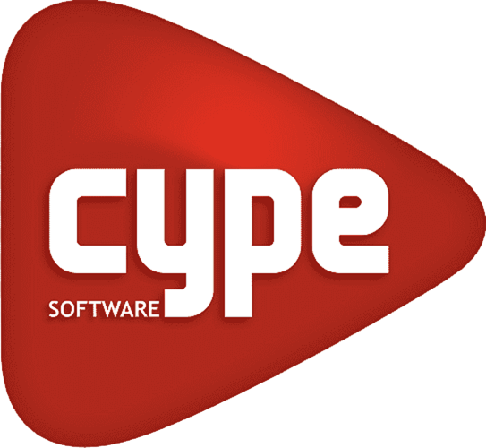
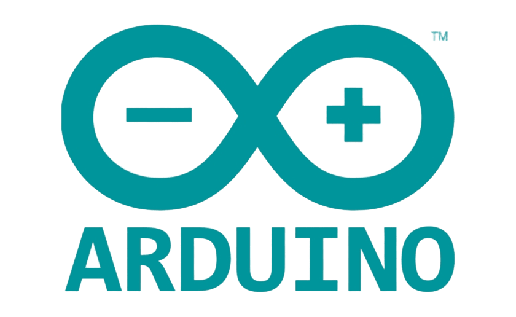
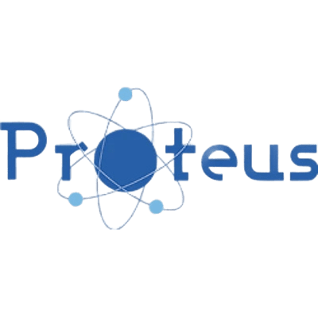
Cartografía
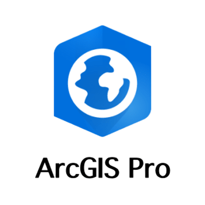
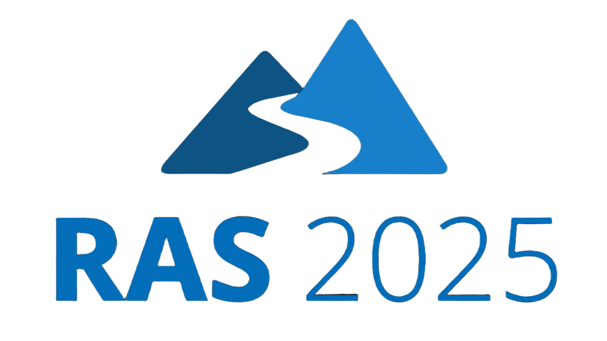
Diseño
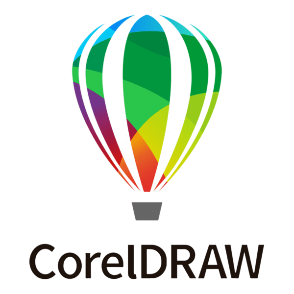
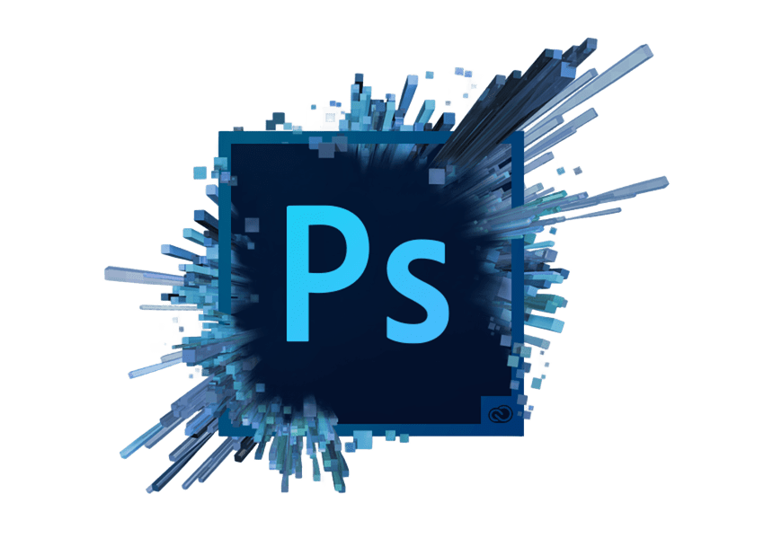
Ofimática
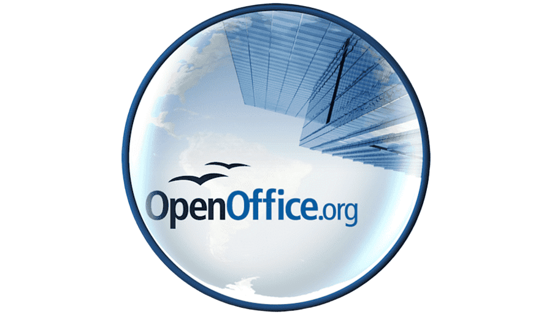
Presupuestos
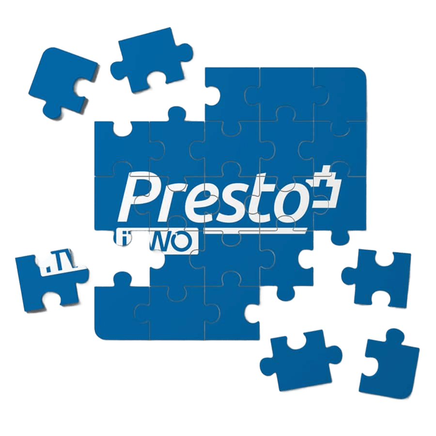
ERP
Modelo digital del terreno de la cuenca del Río Águeda en la comarca de Ciudad Rodrigo (Salamanca)
Con este modelado quería conseguir un gemelo digital en el que poder aplicar capas de datos para realizar cálculos sucesivos y conseguir mapas de riesgos de inundaciones en tiempo real. He utilizado curvas de nivel con equidistancia de 20 m, desarrollando el modelo digital del terreno mediante ArcGIS PRO y añadiéndole imágenes satelitales georeferenciadas.
Caracterización de Recursos Hídricos de la Cuenca del Río Águeda
Estudio exhaustivo y análisis de caracterización de los recursos hídricos en la cuenca del río Águeda a su paso por la comarca de Ciudad Rodrigo. El compendio incluye memorias técnicas, balances de caudales y mapas de zonificación distribuidos en 9 módulos integrales.
Sistema de Cultivo Automatizado (IoT)
Diseño e implementación de un sistema inteligente de cultivo hortícola vertical automatizado. El corazón del proyecto utiliza un microcontrolador ESP32 programado en entorno Arduino IDE, encargado de monitorizar sensores de humedad y activar de forma precisa las microbombas de agua para el riego óptimo de las raíces suspendidas.
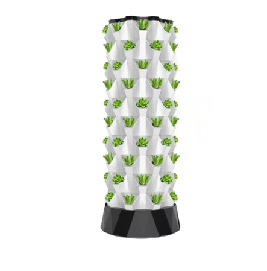
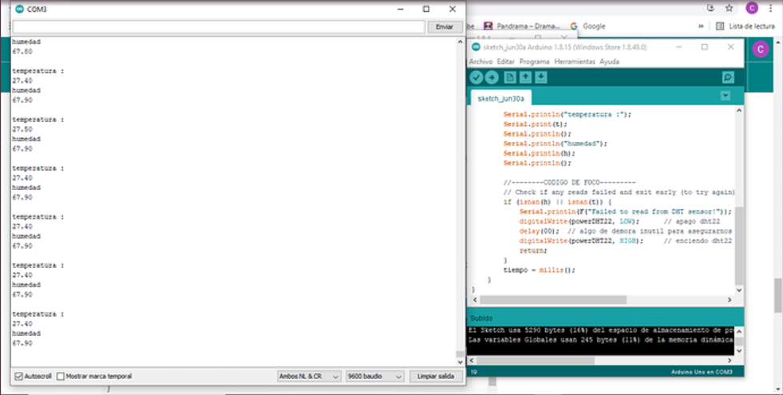
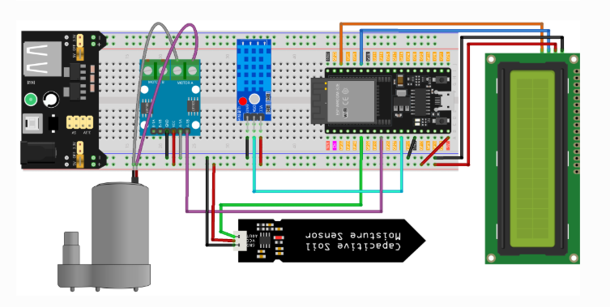
⚡ Fase de Desarrollo Actual: Conectividad e Interfaz IoT
El firmware y la electrónica base ya están completamente operativos. Actualmente me encuentro desarrollando la interfaz web HTML nativa y responsive para dispositivos móviles. Aprovechando las tecnologías de conectividad Wi-Fi y Bluetooth integradas en el ESP32, esta aplicación web permitirá visualizar las gráficas de humedad en tiempo real y gobernar las microbombas a distancia desde cualquier lugar.
Energías Renovables y Eficiencia Energética
Proyectos técnicos, dimensionamientos y análisis de optimización en diferentes tecnologías de generación limpia y gestión de la eficiencia energética.